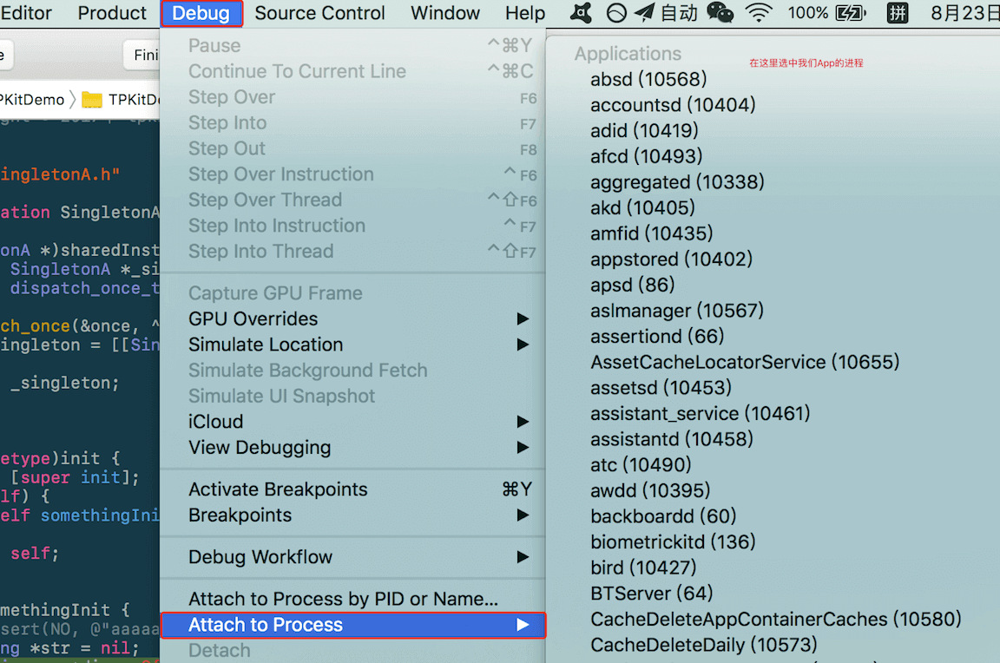
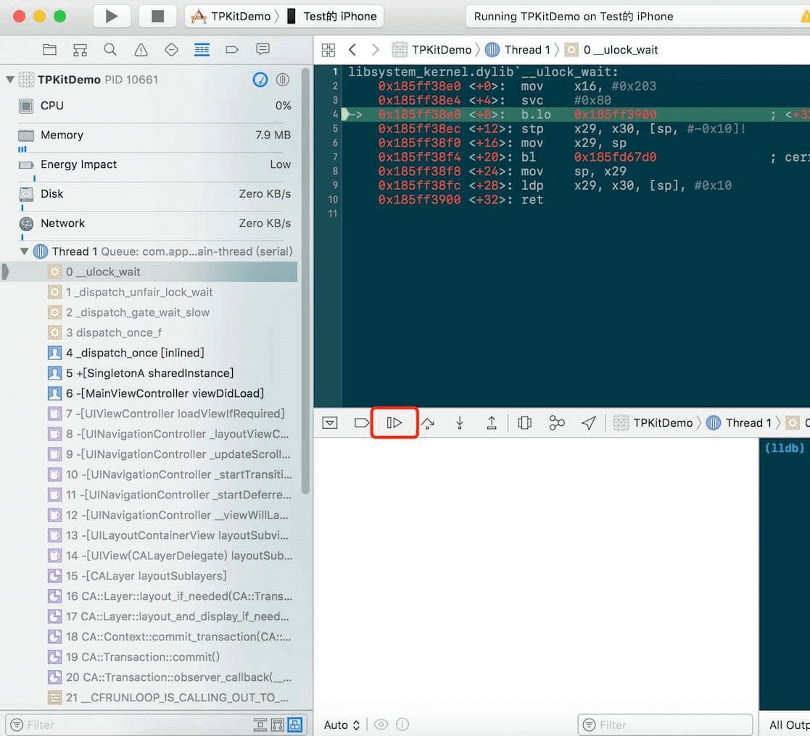
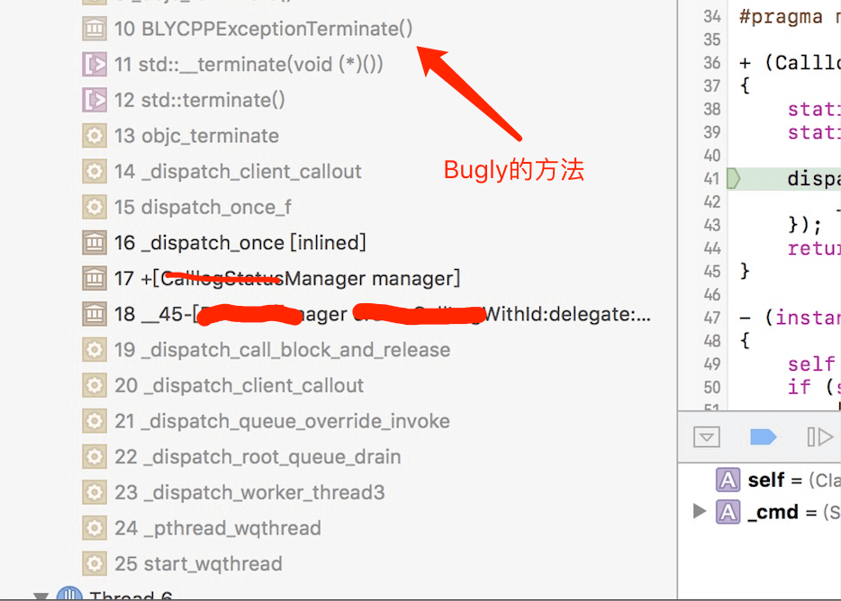
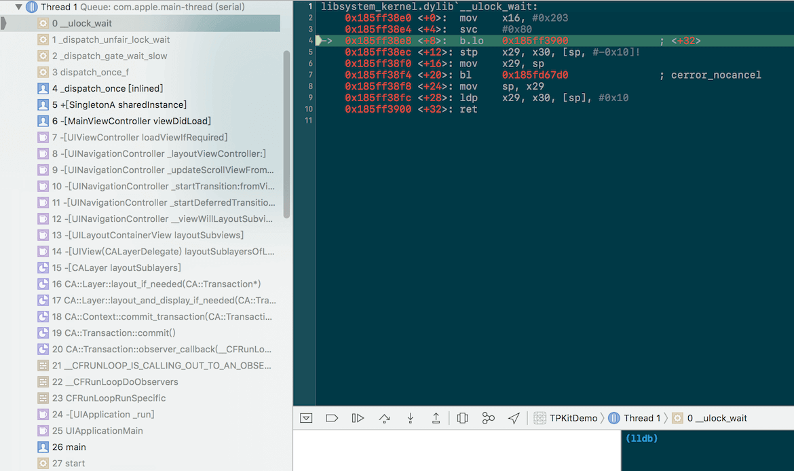
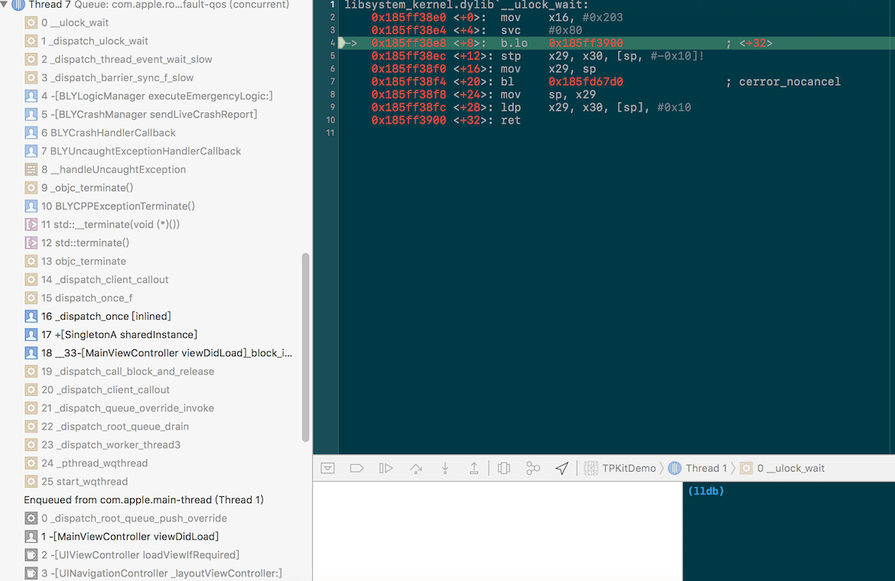

腾讯Bugly的巨坑：使用不当会造成UI界面卡死

Contents
前言
Bugly和dispatch_once使用不当，会造成UI界面卡死。笔者在前段时间碰见了这样的一个卡死的情况，特意记录下来。
iOS开发者或多或少都听过或用过Bugly。它是腾讯开发的一个SDK，用来捕捉App中的crash。对于dispatch_once大家就更熟悉了，现在大部分开发者用这个来创建单例。如：
|
|
但是这两个在一起怎么会造成UI界面卡死呢？如果笔者不是亲眼所见，也不会相信Bugly会造成界面卡死。
现象
前几天碰见了这样一个情况，我们的App启动时有时候会卡在启动界面上，过一段时间 就会被系统杀掉，而且不会有Crash的堆栈。这个现象让我们开发很头疼，一旦出现就只能杀进程，重新启动App，并且还不知道是怎么回事。
调查
看到界面卡死的第一反应就是，是不是哪个地方死锁导致主线程阻塞了。使用Console.app查看App启动时的日志，没发现什么异常的情况，并且死锁这个在日志中查找起来比较麻烦。
好不容易复现这个情况后，赶紧把手机接上Mac，在Xcdoe中Attach我们App的进程，如图：

然后暂停下App进程，就可以看到当前所有线程的堆栈情况了。如图：

这下，我们才知道是卡在了dispatch_once这个地方。是我们的单例使用有问题吗？我们知道， 如果dispatch_once递归调用就会产生死锁。示例代码如下：
|
|
很有可能就是这个原因导致我们的App启动时卡死。于是我们开始排查dispatch_once的代码里会不会在某个条件下再次调用到相同的dispatch_once，形成递归调用，导致死锁。
就这样折腾了好久，也没有发现dispatch_once形成递归调用的可能性，就在调查快陷入僵局的时候，笔者在日志中发现了一些信息：
*** Assertion failure in -[XXXXXManager XXXXXmethod], /Users/whf/Desktop/WHF/XXXXX/XXXXX/XXXXXManager.m:32
怎么会有NSAssert断言日志信息，有NSAssert断言时App不应该早就Crash了吗，为什么会卡住被系统结束运行？笔者把NSAssert断言的地方做了处理，不会再触发断言了，然后重新Debug安装App后试了很多次，果然就不会再卡住了。
到此，启动卡住的触发原因找到了，是因为dispatch_once中的代码有NSAssert断言的Crash，导致主线程卡住。
但是，为什么会这样，笔者是一个喜欢刨根问底的人，于是有了下面的问题复现。
问题复现
dispatch_once中执行的代码有Crash的话，会造成死锁吗？难道是NSAssert使用的@try{}@catch{}的异常机制改变了代码的执行顺序，致使dispatch_once死锁？
这个解释太牵强，感觉站不住脚。
笔者新建了一个demo工程，来测试这种情况。代码大致如下：
SingletonA.m 文件：
|
|
使用这个单例的地方MainViewController.m :
|
|
代码跑起来后，并没有死锁。难道是需要多线程访问[SingletonA sharedInstance]这个方法？
立马修改了下使用这个单例的地方
|
|
在全局队列里也访问了这个单例，然而，并没有出现死锁的情况。
太令人失望了，看来，在dispatch_once执行的代码中有crash，并不会造成dispatch_once死锁。
正当陷入僵局的时候，再次看了下当时我们App卡死时后的堆栈。如图：

发现了Bugly的身影，笔者立刻在Demo工程中加入了Bugly库，然后重新跑了下代码，还是没有死锁啊，怎么回事？ 又仔细端详了上面这张图，这次有新的发现。Bugly是在非主线程捕获到的这次Crash，而主线程也访问了这个出问题的单例，会不会是因为后台线程初始化这个单例的时候crash了，Bugly捕获了这个Crash在这个后台线程处理，然后主线程访问这个单例就在一直等待这个单例初始化完成。好了，笔者改了下调用单例的地方，让主线程休眠1s，方便后台线程提前初始化单例。
|
|
果然，死锁了！！！
主线程截图：

后台线程截图：

现在明白了，使用dispatch_once的单例初始化的时候抛出异常或者Crash时，Bugly捕获到后进行处理，这时候如果主线程再试图去访问这个单例，就会造成死锁。
总结
Bugly和dispatch_once在以下条件下造成会死锁:
1.后台线程初始化dispatch_once单例时抛出异常或者crash，
2.主线程也正在访问这个单例。
为什么说这个是Bugly的巨坑呢？
这种情况下正常的流程就应该Crash了，但是Bugly把这种错误变为了死锁，掩盖了问题，最后被系统杀掉，没有了Crash堆栈。这样就不好查找定位问题了，尤其是当这个Crash不是必现，而且还是线上版本的时候，就更不容易排查问题了。Bugly把我们活生生地往深沟里带，让我们最开始排查问题的方向就错了。
所以，如果集成了Bugly，App又经常不明情况的卡死可以排查下这类情况。
如何避免？
虽说是Bugly造成的死锁，但其根本原因还是我们自己代码Crash了，Bugly只是掩盖住了这种Crash，让我们不容易排查问题。那要如何避免呢？
1.项目少用单例。笔者一直不太喜欢什么东西都搞个单例来处理。
2.dispatch_once中的代码尽量只做初始化的事情，不要调用很多其他的方法。
3.dispatch_once中的代码尽量不要抛出异常，不要Crash。
4.给Bugly报Bug。
好了，总结完了，成功把自己代码的问题甩锅给Bugly～～～～
请大家轻拍～～～
转载请注明出处:https://www.wellphone.me